固件提取系列-RawNAND文件恢复
前言
本文记录了还原车机内NAND Flash文件系统的过程。
恢复过程
车机中高通CPU使用MXIC B162711 NAND Flash存储芯片，一般很少直接用NAND Flash的，除非像高通这样对自己的主控特别自信。 在进行硬件分析时，发现此芯片并未采取防拆措施，故将其放在焊接台，进行拆解。
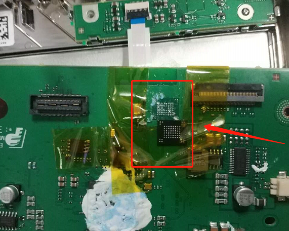
其芯片信息如下，是一块512MB的SLC NAND
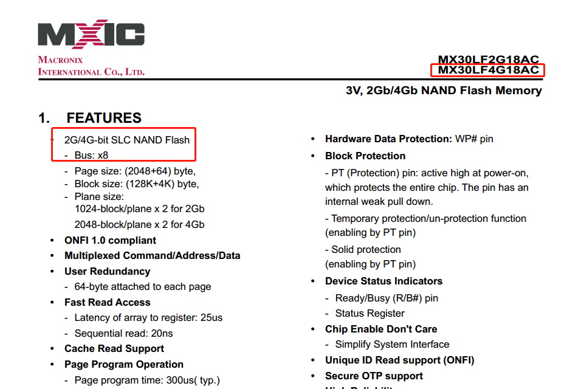
芯片采用BGA63封装，其引脚定义如下
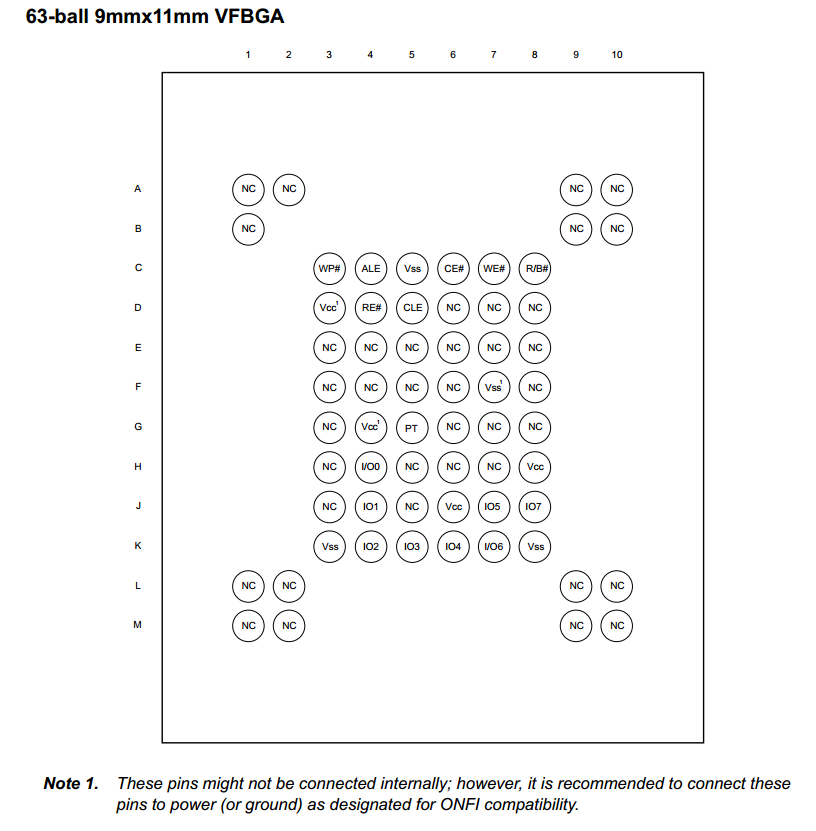
以下为提取过程，使用的是Proman编程器
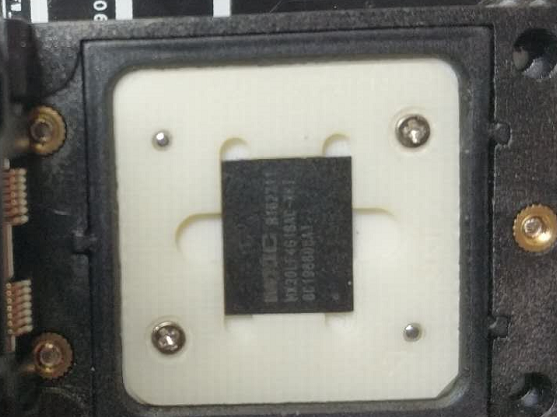
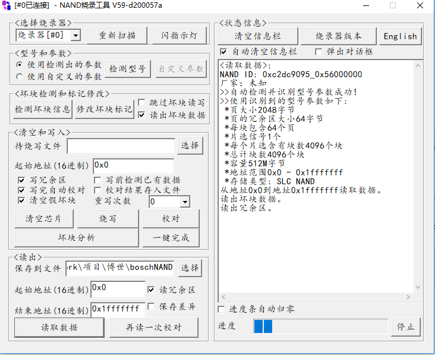
随后我对此芯片的固件进行了多次的读取，并相互比对，保留出现次数多的字节，尽量减小翻转位的影响，保证固件的正确性。
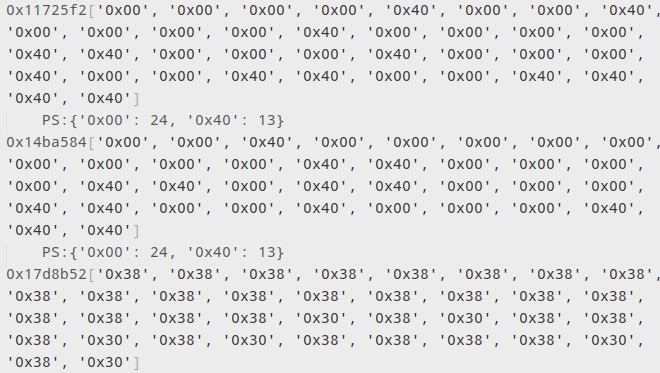
车机使用高通CSR3703 SoC方案。
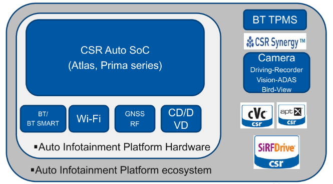
互联网上并未公开该芯片的数据手册，尝试了_________，无法获取数据手册，他们对数据手册非常保密。
手动拆解芯片，也无法从BGA排列判断芯片类型。
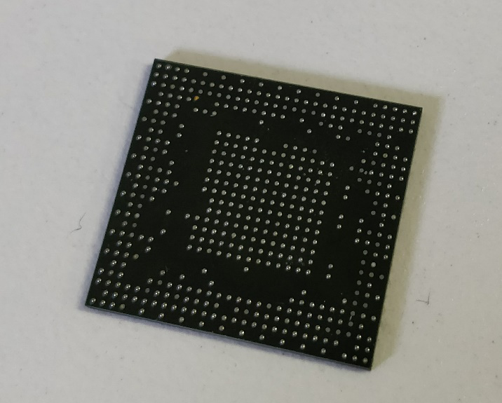
通过盲测，确定了SoC内存映射表在NAND主控中，因此固件转储文件的逻辑块顺序无法确定。
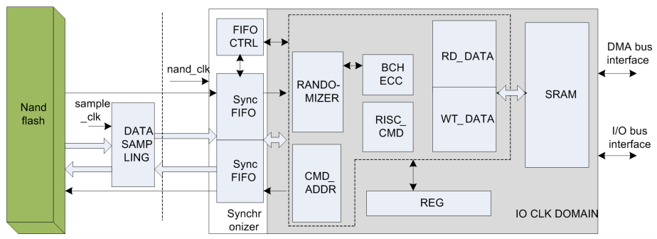
因此只能对提取的固件盲测，通过分析NAND Dump的二进制数据，暂时把系统底层部分文件提取出来，包括U-Boot。
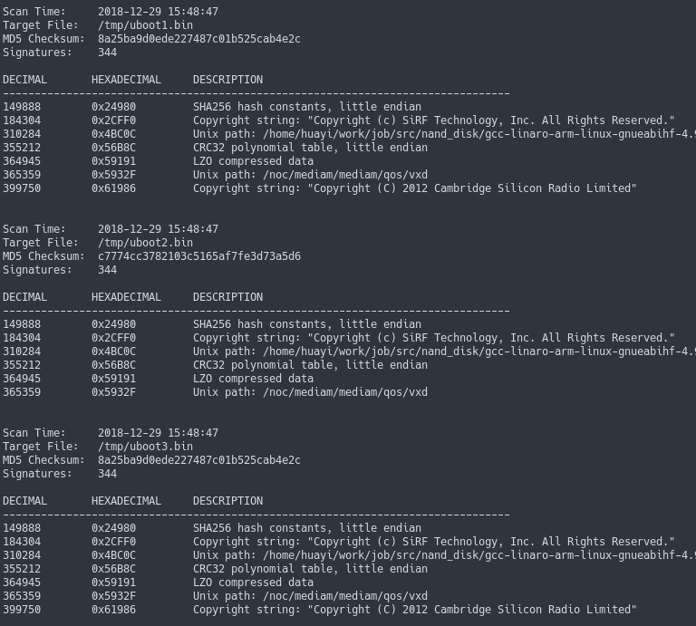
可以对U-Boot逆向分析，但是重要信息在系统分区内。
CSR Visor 128KB
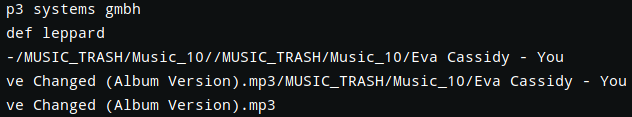
Device Tree，显示控制台为ttySiRF1，波特率115200
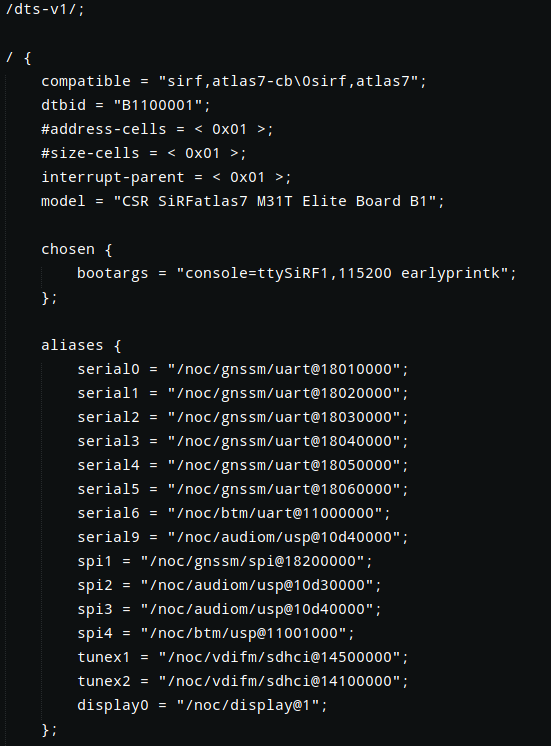
NAND主控配置信息。
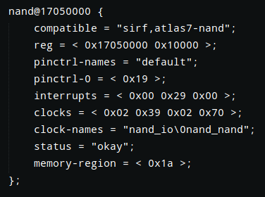
由于上一台车机的NAND转储文件擦除块过于随机，因此从另一台车机拆解了NAND Flash读取
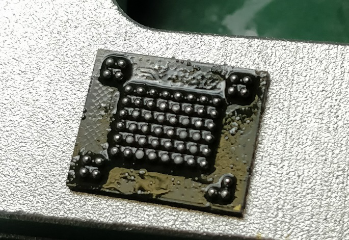
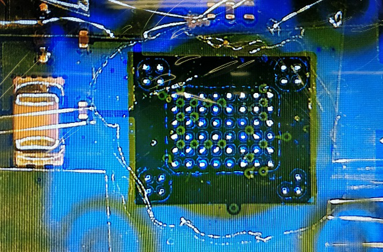
为了继续使用车机，对芯片重植球，使用光学焊台进行对位修复。
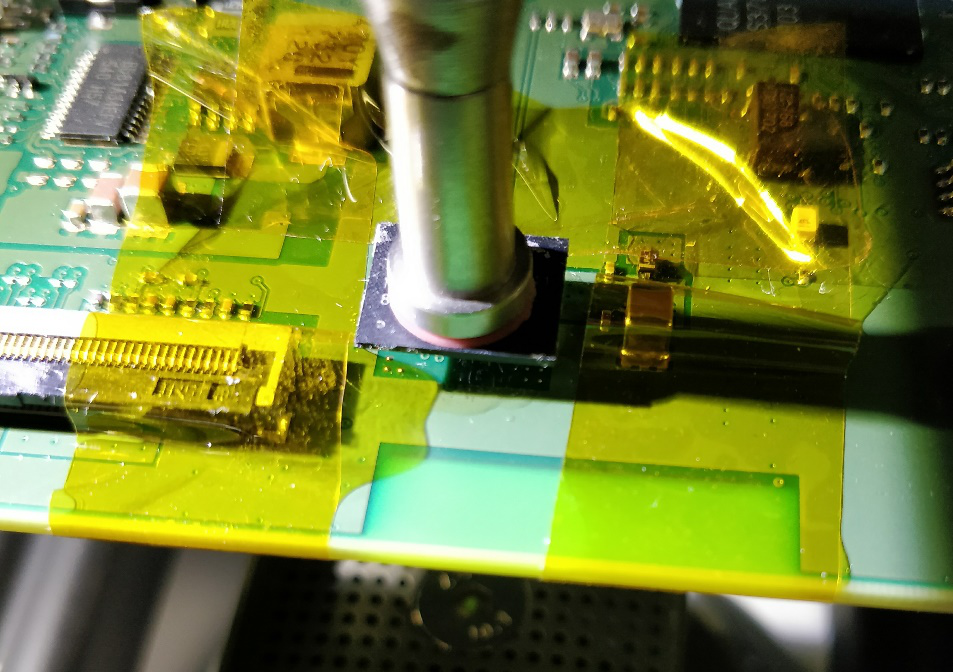
查阅了一些资料，WL模式可能是混合模式，参考了现有公开的FTL代码，并没有找到能匹配的映射逻辑，猜测FTL Table可能存放在NAND Controller的ROM内。
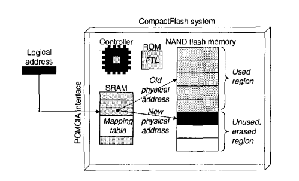
通过分析U-Boot，确定使用了专有的NANDDisk驱动，使用IOCtl来读写NAND，映射算法不在此处。
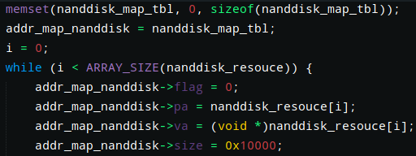
因此只能得到碎片化的文件，而非文件系统。为了测试映射表是否真的存放在SoC内，我将两台相同的车机的NAND Flash进行替换实验，控制变量，并进行多次植球拆焊，使用其他车机的NAND Flash没有一次能启动。最后，我将自带的NAND Flash植球分别装回原先的车机，能成功启动，证明了SoC内存在映射。
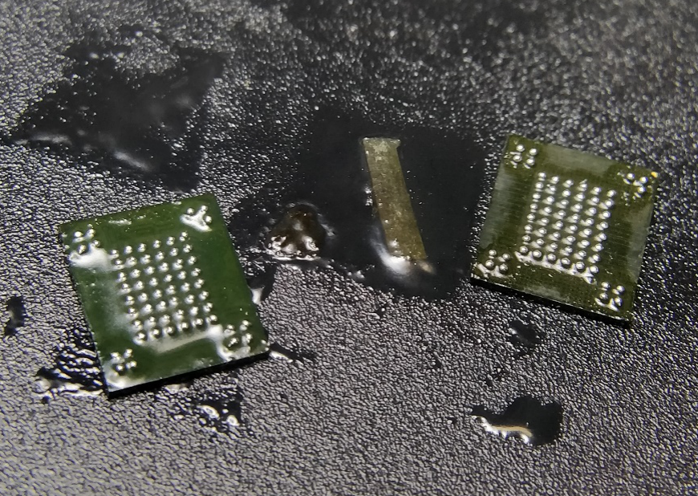
经过多次对比，将完整性高于50%的RAMdisk提取出来，可以成功读取到前半部分的数据。
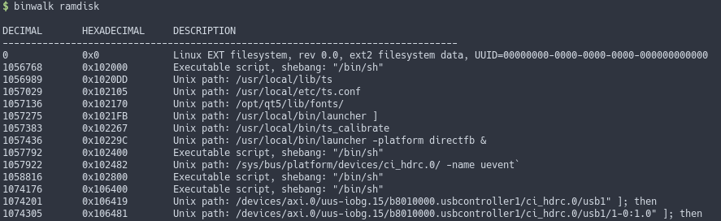
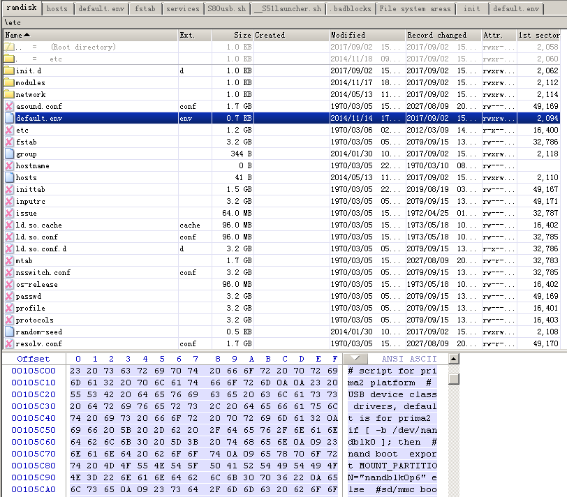
但是可以确定使用了Linux EXT文件系统，根据MBR信息有三个分区
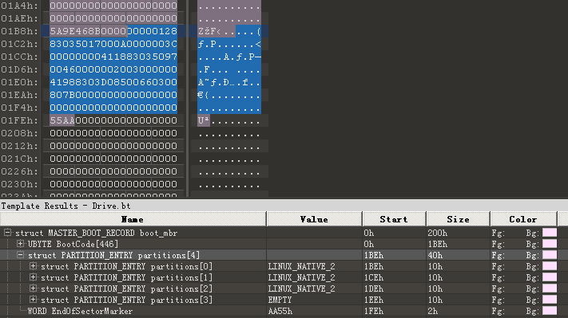
Parititon1: 30MB
Partition2: 400MB
Partition3: 61.75MB
其他文件只是一些资源文件和碎片化的ELF文件，因为ELF碎片化，无法正常逆向分析。
于是我手动尝试寻找擦除块顺序逻辑，将每个擦除块分离出来，分析每个块的特征，由于最前面一部分的OOB区域和后面不一样，影响了我当时的判断，只找出了页的顺序，所以只能还原出体积较小的zImage和Ramdisk，整体逻辑无法猜解。
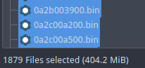
在NAND转储文件中也没找到Map Table，因此无法在短时间内获取文件，需要分析清楚块的规律，才能得到映射逻辑。
我把最后另一台车机的NAND Flash拆下并进行了读取。
发现两个车机系统版本不一致，无法继续分析。
XXXXX_IHU_LOW_A7_LINUX_18.0F40
XXXXX_IHU_LOW_A7_LINUX_18.0F43
Kernel和ramdisk的编译时间页不一致，因此没有办法通过盲测来猜解映射算法
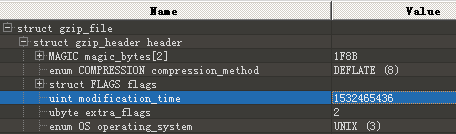
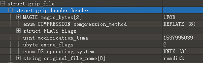
因为使用了混合映射，通过USB HID GetShell的方式获取了相同版本的固件进行分析，得到了映射算法。
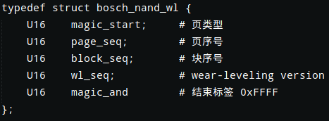
这是修复NAND dump的脚本，我也忘了当时写了些啥东西
1
2
3
4
5
6
7
8
9
10
11
12
13
14
15
16
17
18
19
20
21
22
23
24
25
26
27
28
29
30
31
32
33
34
35
36
37
38
39
40
41
42
43
44
45
46
47
48
49
50
51
52
53
54
55
56
57
58
59
60
61
62
63
64
65
66
67
68
69
70
71
72
73
74
75
76
77#!/usr/bin/env python3
import sys
import binascii
import struct
if len(sys.argv) < 3:
print("Usage: fuckftl.py ftl.bin raw.bin")
sys.exit(1)
def bin2hex(bin):
x = str(binascii.b2a_hex(bin), "utf-8")
return x
def hex2int(hex):
x = int('0x' + hex, 16)
return x
def get_hex_tens_place(num):
x = int((num / 0x10) % 0x10) * 0x10 + int((num / 1) % 0x10)
return x
def get_le_int16(be):
return struct.unpack("<H", be)[0]
proman_file_path = sys.argv[1]
raw_file_path = sys.argv[2]
nanddisk_path = sys.argv[3]
readable_block_addr = {}
try:
with open("sp_.bin", 'wb') as sp:
with open(proman_file_path, 'rb') as proman_file:
promanbin = proman_file.read()
proman_file.close()
with open(raw_file_path, 'wb') as raw_file:
for x in range(0, len(promanbin), 0x840):
pbuffer = promanbin[x:x+0x840]
page_a = pbuffer[:0x400]
page_b = pbuffer[0x415:0x800]
page_c = pbuffer[0x816:0x82B]
sparea_b = pbuffer[0x800:0x816]
if sparea_b[0:4] == b'\xFF\x42\x00\x00' or (sparea_b[0:4] == b'\xFF\x41\xFF\xFF' and sparea_b[6:8] == b'\x00\x00'):
x_addr = get_le_int16(sparea_b[4:6])
if x_addr in readable_block_addr:
cur_wl_version = get_le_int16(sparea_b[6:8])
if readable_block_addr[x_addr][1] > cur_wl_version:
readable_block_addr[x_addr] = [int(x / 0x840 * 0x800), get_le_int16(sparea_b[6:8])]
else:
readable_block_addr[x_addr] = [int(x / 0x840 * 0x800), get_le_int16(sparea_b[6:8])]
pbuffer = page_a + page_b + page_c
raw_file.write(pbuffer)
sp.write(sparea_b[:10])
raw_file.close()
sp.close()
except Exception as e:
print(e)
readable_block_addr_sorted = sorted(readable_block_addr.items(),key=lambda x:x[0])
with open(raw_file_path, 'rb') as raw_file:
rawbin = raw_file.read()
raw_file.close()
cur_index = -1
with open(nanddisk_path, 'wb') as nand_file:
for (k,v) in readable_block_addr_sorted:
if k<0xfff:
print("fix block {:x}, off {:x}".format(k, v[0]))
# print(hex(k))
skip = k-cur_index
if (skip) == 1:
nand_file.write(rawbin[v[0]:v[0]+0x20000])
cur_index = cur_index + skip
nand_file.close()
最终还原出固件，由于NAND位翻转特性，还需要使用Hanming ECC修复错误。另外因为该系统重启过多次，部分内容不一致，所以下图显示存在大量差异。
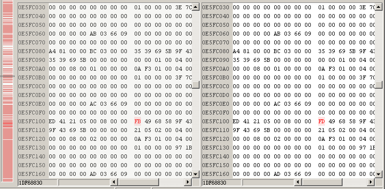
文件大小与类型都没有错误
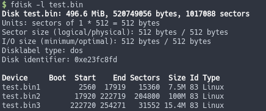
还原出固件的大小与实际运行中的系统显示的496.6MiB匹配
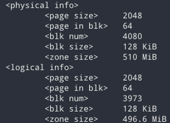
打开其中的第二个分区，可以看到正常显示目录
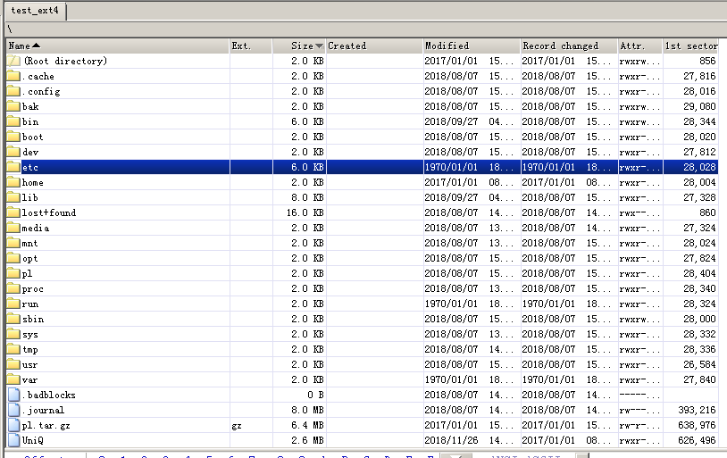
但是由于位翻转，我估计肯定有一些文件是损坏的，因为时间限制，没有继续研究下去。